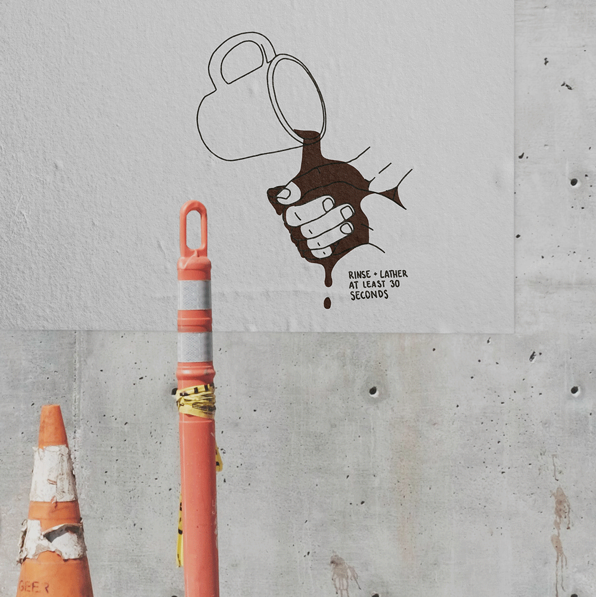
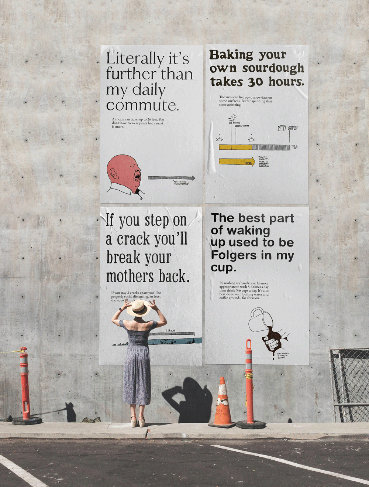
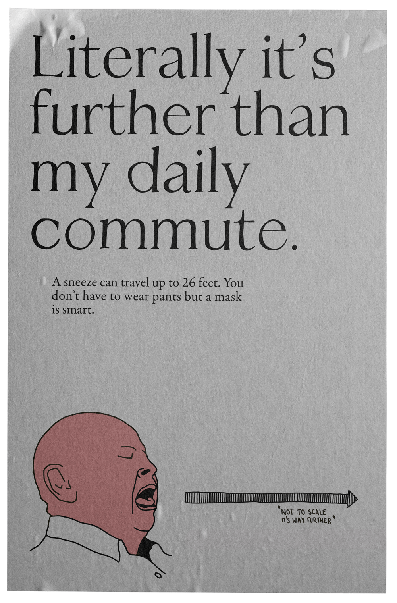
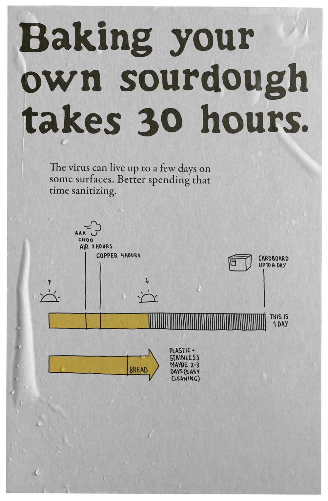
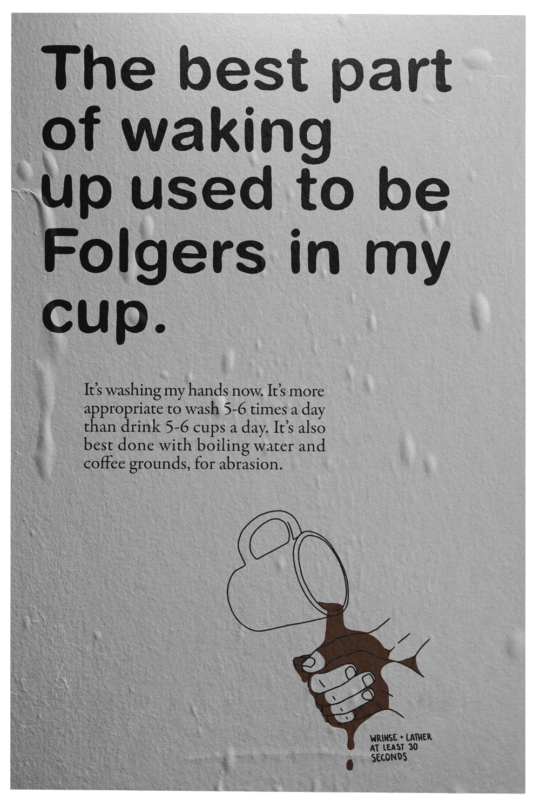
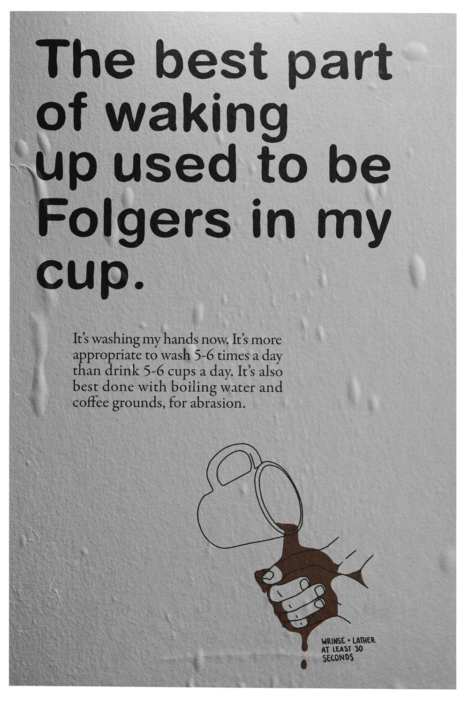

Sterile Packaging Compliant
Try Your Best.
PROBLEM
There is overwhelming amounts of data, intended to govern how we live our lives during quarantine. Some data is confusing, there is conflicting information, a general discomfort and uncertainty. There has been unhealthy and overwhelming social media push towards extreme productivity and personal growth during quarantine.
BACKGROUND
Theres a huge problem with motivation, it's a conundrum of the quarantine.
INSPIRATION
Posters done by markyoder.designs in a similar fashion. "Why You Should Ignore All That Coronavirus-Inspired Productivity Pressure" by Aisha S. Ahmad, a manifesto concerning real personal care, motivation, and fear during the quarantine. So far also some visual inspiration from where the sidewalk ends and cartoons in the new yorker.
SOLUTION
I'm going to work on typographic posters that will visualize corona virus/social distancing data visualized through shared struggles and humor with a call for trying to be ok.
PROCESS
I have 2 ideas I'm currently working on. Social distancing, 6 ft distance + step on the crack, break your mothers back. Life of corona virus on different surfaces + the life of a sourdough starter or bread rising.
New ideas! Concerning washing your hands - keeping it simple with a lot of humor. Wash often and for 30 seconds + drinking many cups of coffee in a day. And the infamous sneeze, that can travel and carry the virus 26 feet w/out a mask + that being farther than I move on a daily basis, being quarantined and all.
I'm happy with a system of four posters, and the spectrum of data/directions I've been able to represent fully with the set of four.
MASON YOUNG-SHOR
Teaser.

Final.
   
